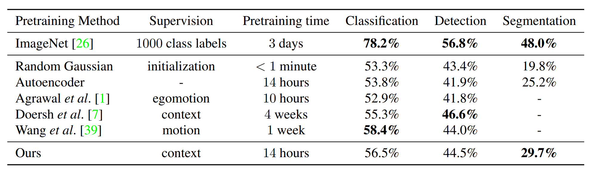
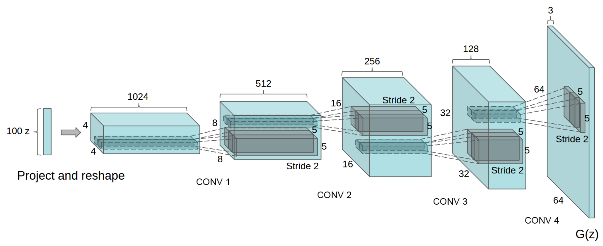
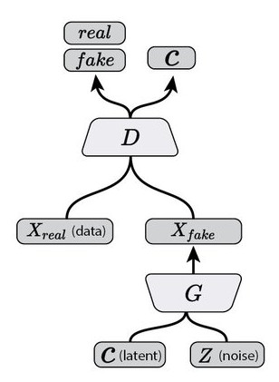
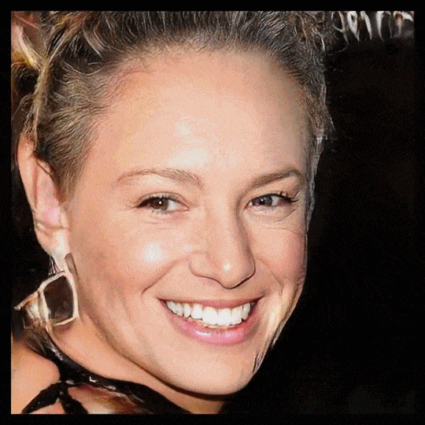

class: center, middle # Unsupervised learning and Generative models Charles Ollion - Olivier Grisel .affiliations[    ] --- ## Outline ### Unsupervised learning -- ### Autoencoders -- ### Generative Adversarial Networks --- class: middle, center # Unsupervised learning --- ## Unsupervised learning Generic goal of unsupervised learning is to **find underlying structrure** in data. Specific goals include: - clustering: group similar observations together; - reduce dimensionality for visualization; - building a better representation of data for a downstream supervised task; - learning a likelihood function, e.g. to detect anomalies; - generating new samples similar to past observations. ??? Use case for generating new data: - arts: smart synthetizers for electronic music. - entertainment: procedural games: faces & behaviors for NPCs, infinite landscapes.... - more natural UI, e.g. speech synthesis. - media compression, denoising, restoration, super-resolution. --- ## Unsupervised learning For complex data (text, image, sound, ...), there is plenty of hidden latent structure we hope to capture - **Image data**: find low dimension, semantic visual representations, independant of variation sources - **Text data**: find fixed size, dense semantic representation of data -- Latent space might be used to help build more efficient human labeling interfaces. => Goal: reduce labeling cost via active learning. --- ## Graal of unsupervised learning Find a low dimension space which captures all the **variations** of data and **disantangles** the different latent factors underlying the data. .center[ <img src="images/latent_infogan.png" style="width: 640px;" /> ] .footnote.small[ Chen, Xi, et al. Infogan: Interpretable representation learning by information maximizing generative adversarial nets. NIPS, 2016. ] --- ## Self-supervised learning find smart ways to **build supervision** without labels, exploiting domain knowledge and regularities -- Use **text structure** to create supervision - Word2Vec, Skip-thought vectors, language models -- Can we do the same for other domains? - **Image:** exploit spatial context of an object - **Sound, video:** exploit temporal context -- No direct **accuracy** measure: usually tested through a downstream task --- ## Self-supervised learning .center[ <img src="images/gupta1.png" style="width: 380px;" /> ] .footnote.small[ Doersch, Carl, Abhinav Gupta, and Alexei A. Efros. "Unsupervised visual representation learning by context prediction." ICCV 2015. ] -- - Predict patches arrangement in images: 8 class classifier - Siamese architecture for the two patches + concat --- # Self-supervised from video .center[ <img src="images/gupta2.png" style="width: 380px;" /> ] .footnote.small[ Wang, Xiaolong, and Abhinav Gupta. "Unsupervised learning of visual representations using videos." ICCV 2015. ] -- - Collect pairs of similar objects from videos -- - Train a siamese net with positive pairs = similar objects detected -- - Hard pairs mining: find objects with large movement --- class: middle, center # Autoencoders --- ## Autoencoder .center[ <img src="images/autoencoder.png" style="width: 420px;" /> ] -- Supervision : reconstruction loss of the input, usually: $$l(x, y = x) = || f(x) - x ||^2_2$$ -- **Binary crossentropy** is also used --- ## Autoencoder .center[ <img src="images/autoencoder.png" style="width: 420px;" /> ] Keeping the **latent code** $z$ low-dimensional forces the network to learn a "smart" compression of the data, not just an identity function -- Encoder and decoder can have arbritrary architecture (CNNs, RNNs...) --- ## Sparse/Denoising Autoencoder Adding a sparsity constraint on activations: $$ ||encoder(x)||_1 \sim \rho, \rho = 0.05 $$ Learns sparse features, easily interpretable -- **denoising autoencoder**: force features for noise robustness .center[ <img src="images/denoising.png" style="width: 400px;" /> ] --- ## Uses and limitations After **pre-training** use the latent code $z$ as input to a classifier instead of $x$ **Semi-supervised learning** simultaneous learning of the latent code (on a large, unlabeled dataset) and the classifier (on a smaller, labeled dataset) -- Other use: Use decoder $D(x)$ as a **Generative model**: generate samples from random noise -- **Limitations :** - direct autoencoder fail to capture good representations for complex data such as images - The generative model is usually of very poor quality (very blurry for images for instance) --- ## Reality Check For image features, **ImageNet pretraining** is still **much better** than unsupervised .center[  ] .footnote.small[ Pathak, Deepak, et al. Context encoders: Feature learning by inpainting. CVPR 2016. ] - Results shown after fine-tuned the network on **Pascal VOC dataset** - The "ours" method is feature representation based on context inpainting --- ## VAE: Todo --- class: middle, center # Generative Adversarial Networks --- ## Generative Adversarial Networks .center[ <img src="images/gan_vanilla.jpg" style="width: 240px;" /> ] Alternate training of a **generative network** $G$ and a **discrimininative network** $D$ .footnote.small[ Goodfellow, Ian, et al. Generative adversarial nets. NIPS 2014. ] --- ## GANs - D tries to find out which example are generated or real - G tries to fool D into thinking its generated examples are real -- Sample real data $x \sim p_{data}$ .center[ <img src="images/gan_eq1.png" style="width: 640px;" /> ] -- Sample $z$ and generate fake data $G(z)$ .center[ <img src="images/gan_eq2.png" style="width: 640px;" /> ] -- .center[ <img src="images/gan_eq3.png" style="width: 640px;" /> ] --- ## GANs **1D-example** .center[ <img src="images/gan_1d.png" style="width: 560px;" /> ] - optimal: $\color{blue}{D} = \frac{1}{2}$ , $\color{green}{G(z)} = p_{data}$ -- - $G$ never "sees" training data, it is solely updated from gradients coming from $D$ -- - Naive Keras implementation: ```python d_loss = K.mean(-K.log(Dx) - K.log(1 - DGz)) g_loss = K.mean(K.log(1 - DGz)) ``` --- ## DC-GAN .center[  ] - GANs training is unstable, and may suffer from **mode collapse** -- - **Sensitive hyperparameters:** Use of batchnorm, strided convolutions, careful learning rates, several $D$ updates per $G$ updates... .footnote.small[ Radford, Alec, Luke Metz, and Soumith Chintala. Unsupervised representation learning with deep convolutional generative adversarial networks. 2015. ] --- ## Info GAN .footnote.small[ Chen, Xi, et al. Infogan: Interpretable representation learning by information maximizing generative adversarial nets. NIPS, 2016. ] .middle[] -- Separate noise $\mathbf{Z}$ and latent variables $\mathbf{C}$ and maximizes the mutual information between $c$ the and the observation $G(z,c)$ ??? It’s not practical to calculate the mutual information explicitly, so we add an “auxiliary” distribution $Q(c|x)$, to approximate the real $P(c|x)$ which is modeled by a parameterized neural network, (with some layers shared with the discriminator). --- ## Info GAN .footnote.small[ Chen, Xi, et al. Infogan: Interpretable representation learning by information maximizing generative adversarial nets. NIPS, 2016. ] .middle[] .middle[<img src="images/latent_infogan.png" style="width: 470px;" />] Separate noise $\mathbf{Z}$ and latent variables $\mathbf{C}$ and maximizes the mutual information between $c$ the and the observation $G(z,c)$ --- ## Progressive growing of GANs .center[  ] All images are generated by walking through the latent space .footnote.small[ Karras, Tero, et al. Progressive growing of gans for improved quality, stability, and variation. 2017. ] --- ## Pix2pix: Conditional GANs .center[ <img src="images/pix2pix_gan.png" style="width: 360px;" /> ] The generation no longer makes use of $z$, rather is conditionned by an input $x$ .footnote.small[ Isola, Phillip et al. Image-to-Image Translation with Conditional Adversarial Networks, CVPR 2017 ] -- .center[ <img src="images/pix2pix.jpeg" style="width: 560px;" /> ] --- ## Cycle GANs .center[ <img src="images/cyclegan.jpeg" style="width: 560px;" /> ] .footnote.small[ Jun-Yan Zhu et al. Unpaired Image-to-Image Translation using Cycle-Consistent Adversarial Networks, ICCV 2017 ] -- - No alignment between pairs needed, simply two different sets of images --- ## Super Resolution .center[ <img src="images/srgan.png" style="width: 630px;" /> ] "Perceptual" loss = combining pixel-wise loss mse-like loss with GAN loss .footnote.small[ Ledig, Christian, et al. Photo-realistic single image super-resolution using a generative adversarial network. CVPR 2016. ] --- ## Domain Adversarial Training .center[ <img src="images/domain_adversarial.png" style="width: 630px;" /> ] .footnote.small[ Ganin, Yaroslav, et al. Domain-adversarial training of neural networks. JMLR 2016. ] --- class: middle, center # Lab 10: Room Painlevé et Sauvy in 15min!